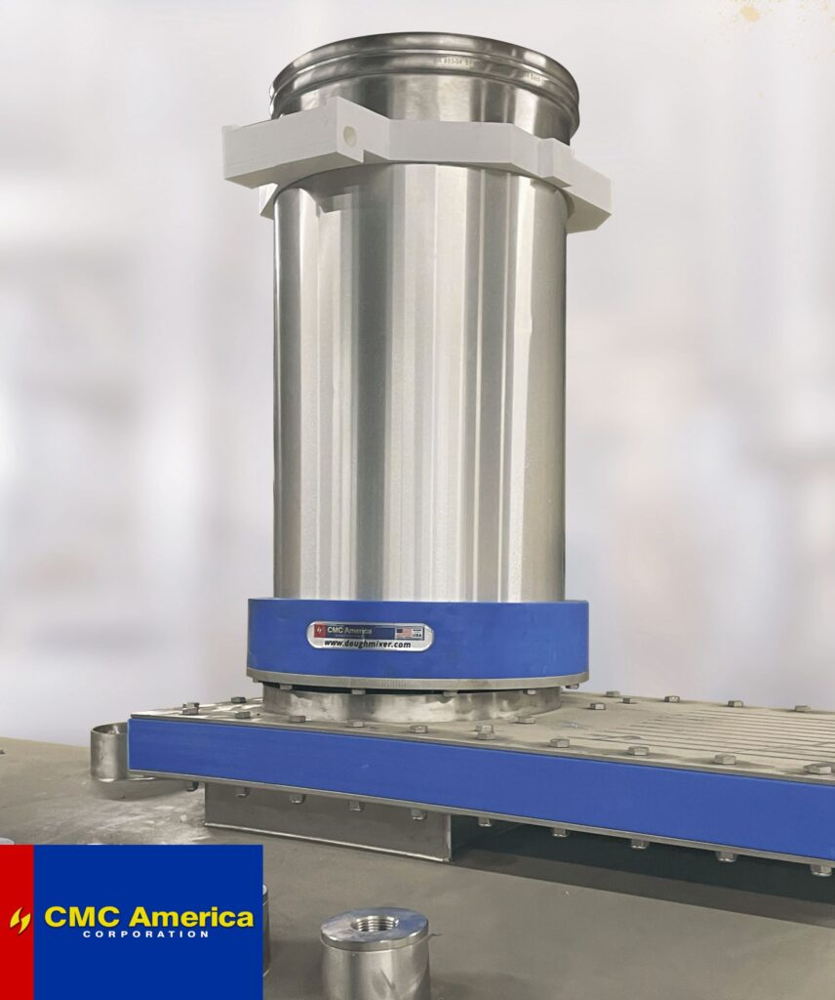

Hydration Systems to optimize mixing and efficiency.
Read About Our Innovative TOP HAT Water Delivery Manifold Below:

TOP HAT
TOP HAT Water Delivery Manifold
At CMC America, we design every solution with one goal in mind: improving your mixing performance. In most batch mixing operations, ingredients like flour, water, salt, and yeast are delivered in layers. This forces the mixer to begin hydration and gluten development after the fact, increasing mixing time and reducing control.
The TOP HAT Water Delivery Manifold changes that. By introducing water in a spray pattern concurrently with the flour entering the bowl, ingredients integrate sooner and more evenly. This improves process control, dough quality, and overall efficiency.
Key Advantages:
- Speeds Flour Hydration for quicker dough development
- Improves Control of Final Dough Temperature
- Reduces Dust for a cleaner mixing environment
- Increases Dough Aeration for consistent texture
- Reduces Cycle Time Per Batch to boost productivity
The result: faster, cleaner, more controlled mixing from the first second of the batch.